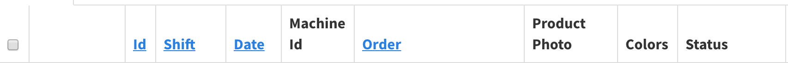
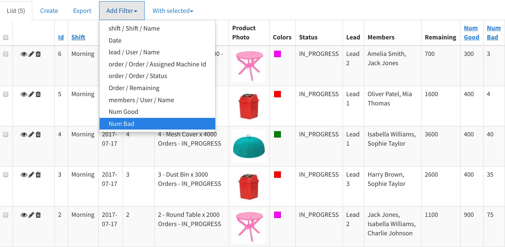
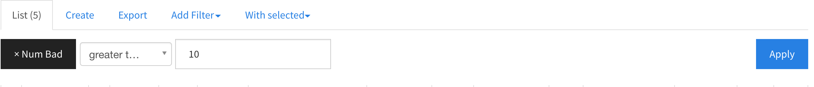
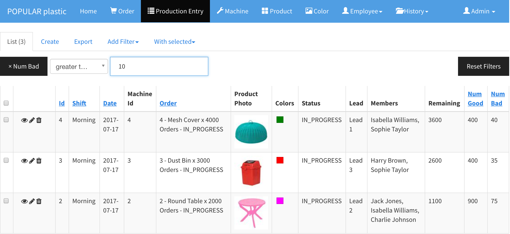

Sorting and Filtering
Sorting
Any blue clickable column names are sortable. For instance,

In the above table, the Id, Shift, Date, and Order columns are sortable.
Filtering
Add Filter > [Column Name]
Filters can be used to filter and search records based on one or more criteria.
Example: filter any production entries with the number of bad is greater than 10.


Search Result
